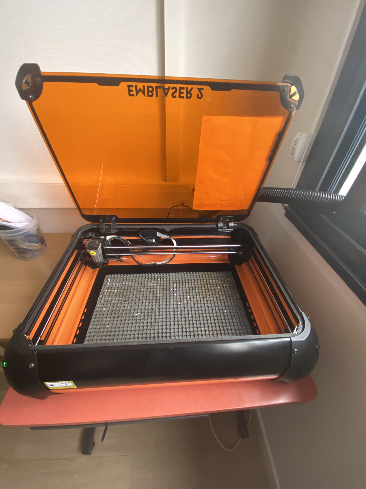
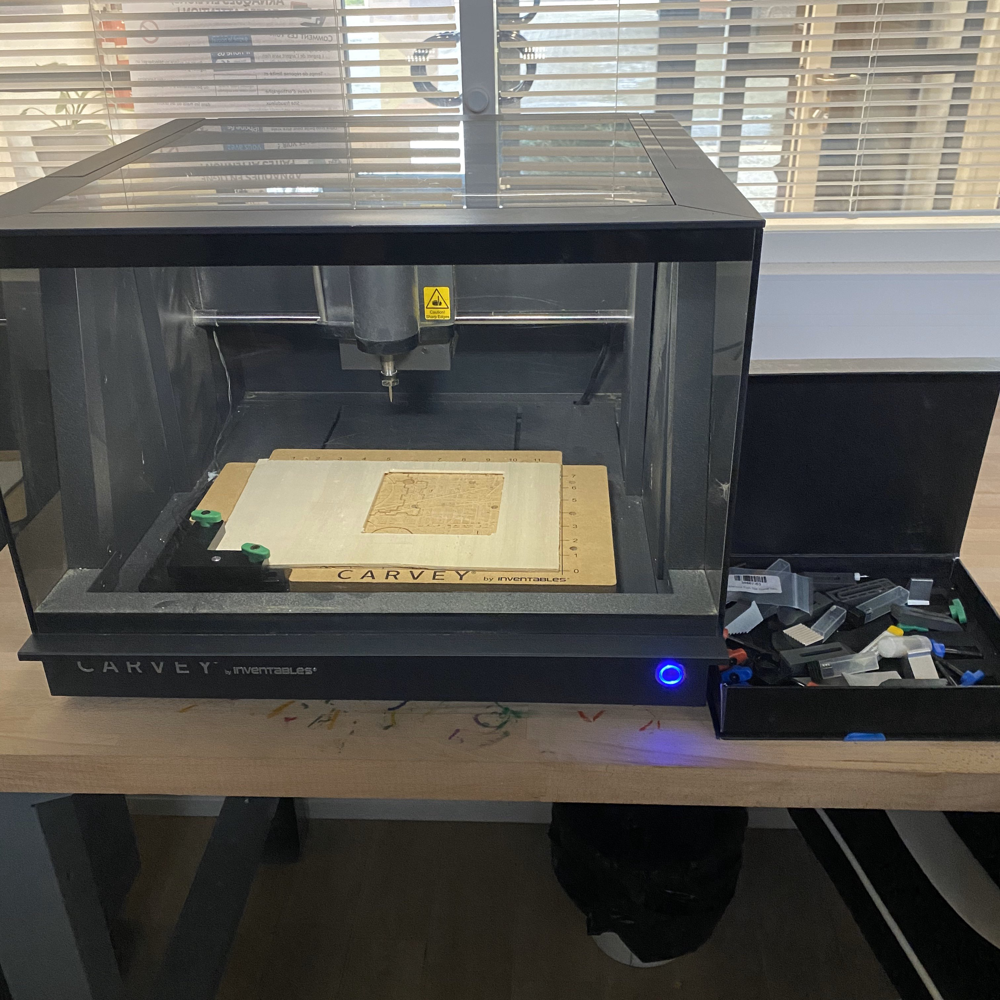

Permet de créé des objet en 3D utiles ou pas dans la vie de tout les jours. Nous avons créé un jeux de société (mécano).

Graveuse
Elle nous permet grâce a son laser intégré de graver des motif, des mot, des dessins. Nous avons créé une borne d'arcade ou nous avons gravé les nom et logo de plusieurs jeux en décoration.

Fraiseuse
Elle nous permet de découper du bois épais et du métal grâce à une fraise qui tourne a 18 000 tour/minute dans la forme que nous voulons. Il existe plusieurs taille et forme de fraise différente.